Опасный нарушитель сервиса чатов Чатовод по адресу https://chatovod.ru, который выгнал большинство пользователей оттуда, и сильно навредил им и чатам (подробная информация о нём в самом конце страницы)
Речь пойдёт об одном пользователе, который очень сильно навредил Чатоводу. Чатовод - это сервис чатов, который расположен по адресу https://chatovod.ru. Этот пользователь является причиной того, что число пользователей Чатовода сильно сократилось, а большинство чатов оказались заблокированы, удалены, или закрыты. Он является сильным троллем с хорошим терпением и выдержкой. Большинство воевавших с ним утверждают, что ушли навсегда с Чатовода, лишь бы его никогда не видеть. Он в основном троллит пользователей, взламывает их аккаунты, шлёт в их чаты порнографию, и спамит их личными данными по всему Интернету. Однажды он даже смог заставить сделать суицид одного пользователя, и теперь очень этим гордится. Он сидит с ников Unian или Юниан. Живёт в Харькове, ему 26 лет, и зовут его Дзюба Владимир Владимирович. Родился 28 июня 1993 года (28.06.1993). Возможно болеет шизофренией и/или употребляет наркотики. Это видно по его повторяющимся словам и фразам, странному стилю речи, а также по частым опечаткам в сообщениях. Он в основном повторяет фразы и слова: "агра больше, злости больше, слабости больше, слабей сильнее, сильнее слабей, агрись, злись, злись больше, больше злись, сильнее злись, слабак, лалка, лалкошня, лалкобес, ахаха, хе-хе, ха-ха, соси, сосай, сасай, лах, дно, днина, взорви планету, дно догасящее, днина догасящая, гасись, чмо, прогасишься, лол, отсоснись, иди отсоснись, соснись, херзон, сосни, ты мне ничего не зделаешь, ты еще слабее (указывает на кого-то, в основном на кого-нибудь из правительства Украины или из пользователей Чатовода), новые слова учи, ты мой раб, заставь, а ты заставь, а то что ?, и да, и так, спам, ты никчемный, ты ничего не можешь, херняга, хрень, хлам, кусок хламца, сверкай, сверкай слабостью, сверкай потрохами, сверкни, сверкни слабостью, сверкни потрохами, чмоня, пес, слабей пес, жалкий, плачь, лей слезы, рыдай, хоть кровавыми слезами залейся, ослабел, еще слабей, еще агрись, еще злись, еще плачь, весели меня, весели, смеши меня, еще весели, сильнее весели, сильнее плачь, вафел, дяденька, батенька, дядя, дерьмо, не льсти себе, кусок говнеца, кусок дерьма, даунито, а мне пох, пох, еще раз повторяю, иди нах, мне все равно, ты моя игрушка, петух, отбитый петух, недобитый, банить научись, сосать не вставать, (указывает на какое-нибудь действие) твой удел". Он говорит, что ненавидит наркоманов, курильщиков, алкашей, педофилов, ЛГБТ, шизофреников, троллей, и инцестников. Но на самом деле он тоже тролль (об этом было написано выше), наркоман (об этом тоже было написано выше), шизофреник (тоже написано выше), педофил, и инцестник (об этом будет написано ниже). Если его оскорбить, или троллить в ответ, то он скорее всего напишет какую-нибудь фразу из тех, которые были написаны в кавычках выше. Почти любое действие он расценивает как выказывание слабости, злости, обиды, или как попытку его развеселить. Если его попросить что-нибудь сделать, он напишет: "заставь", или: "а то что ?", или любую подобную фразу. Иногда он может употребить слишком много наркотиков. Тогда он пишет с ошибками в сообщениях, сходит с ума, и пристаёт к несовершеннолетним. Вот скрины, как он это делал:
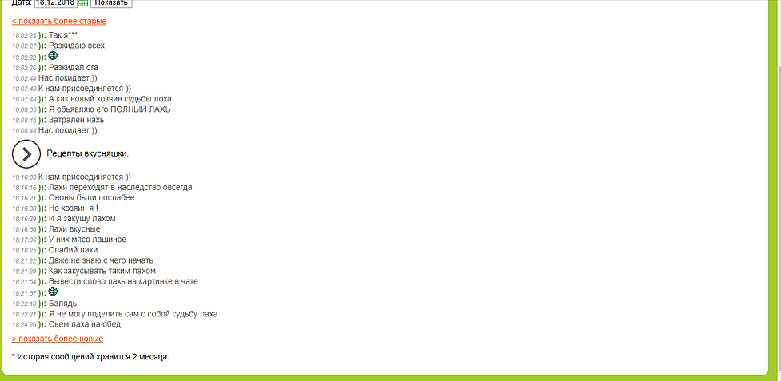
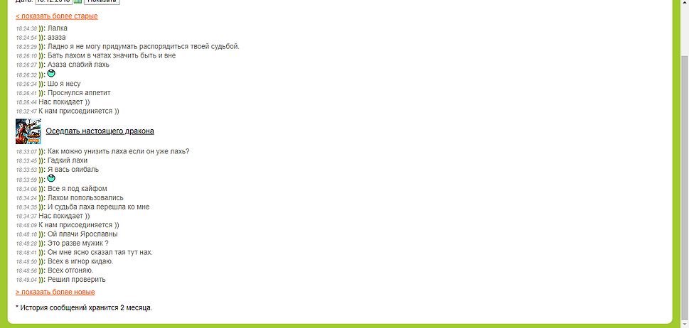
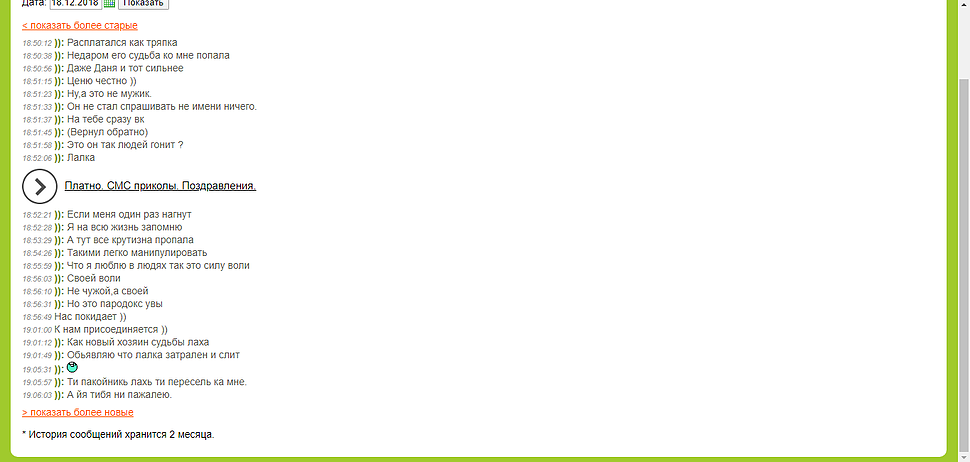
Этот пользователь говорит про себя, что любит "ловить кайф", и называет себя "кайфоломщиком". Он забирает чаты у пользователей в то время, когда сервер Чатовода отключён от питания, и недоступен для посещения. Возможно, что он сам делает DDOS-атаки на Чатовод. Это можно увидеть на скрине:
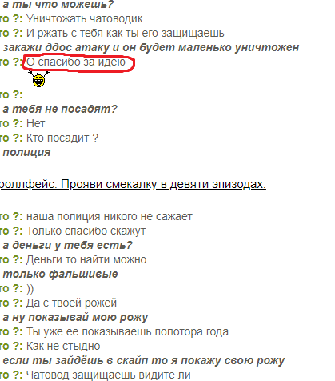
На этом скрине один пользователь в разговоре с нарушителем пошутил, что раз ему нужно уничтожить Чатовод, то нужно заказать DDOS-атаку. Нарушитель, видимо, обрадовался, и возможно это он же сейчас причина редких случаев недоступности Чатовода. Также этот нарушитель является педофилом и инцестником. Любит ходить в инцест чаты. Вот скрин, как он хочет изнасиловать одну девочку, которая сидит в Чатоводе, и известна под прозвищем "хомяк":
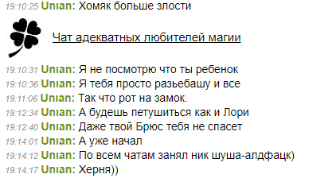
История его занятий в Чатоводе и в Интернете: начал пользоваться Интернетом в 2004-2005 годах. Сначала пришёл в Чатовод в 2010-2011 годах, и стал туда заходить, но потом забросил. А в 2014 году опять туда вернулся. Тут будут показать его действия с 2018 года. 6 мая 2018: увидел одного любителя порно, который сидел в одном из чатов. Этот любитель порно был врагом нарушителя, про которого написано на этом сайте. Так как нарушителю нужно было показать, что он якобы борется с педофилией, он пожаловался на форум Чатовода: Он оставил сообщение: " http://incest-club.chatovod.ru Вот в этом чате сидит педофил.У него чаты однодневки.Он их делает и удаляет.Строит из себя сильно крутого парня.У него нулевое айпи.Настоящее было в закрытом Вами чате.Вот к этому человеку захаживает наш Святоша Кузмич.Который приглашал его даже в свой чат под названием Стена.Пожалуйста закройте чат педофила.Который реально больной на голову.Неизвестно кто там вообще.Старые ники Оксан,Дрон.Ссылка на педофила ht tp://incest-club.chatovod.ru/id2675860 Посмотрите его фото.Это чужие фотки из вконтакте.Он их там ворует.И здесь ими торгует.Зазывает всех в свои чаты.Показывает им там чужие фото как свои.А те кто к нему в чат зашел веселятся с теми фотографиями.Пожалуйста разберитесь.Такое почти каждый день.Он даже и не скрывает что шарится по чужим профилям.В социальных сетях чтобы найти там такие вот фотографии.Эта личность ходит по детским чатам.Один из них который был чат для детей от 7 лет закрытый Вами с адресом ryka.Я просто не могу понять что такие больные здесь делают.У Вас такой замечательный Сервис.Я во многих побывал.Но этот мне понравился больше.И очень обидно что такие личности подрывают Авторитет Вашего Сервиса.С Уважением Володя.И Спасибо за Внимание.". Июнь 2018: зашёл в чат https://3036.chatovod.ru, и стал там троллить детей, которые там общались, и обсуждать с ними секс. На скринах ниже он сидел с ников "Он хлыщек беспонтовы" и "Будущий муж геюшек".
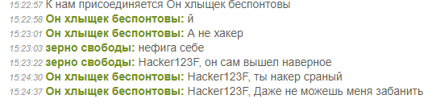
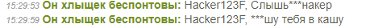
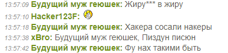
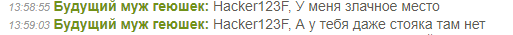
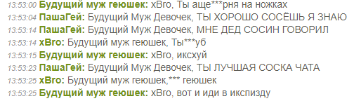
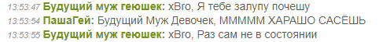
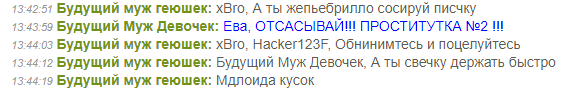
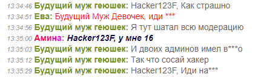
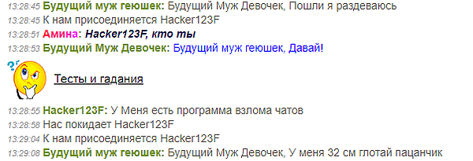
17 сентября 2018: нашёл чат https://ladvin.chatovod.ru и вошёл туда с зарегистрированным ником Unian. Потом удалил этот аккаунт.
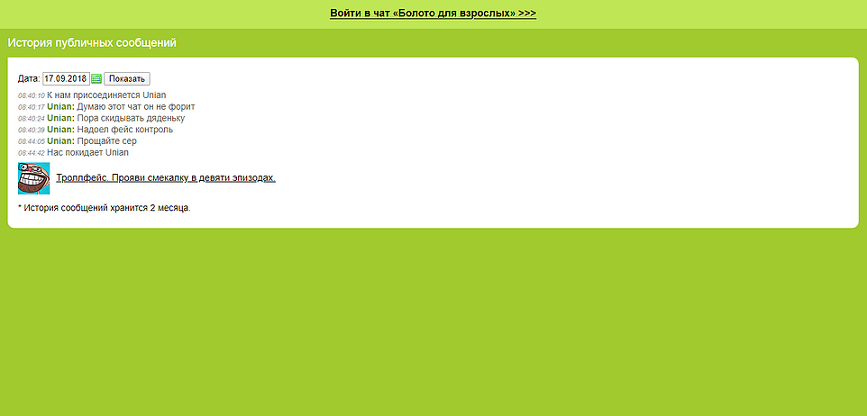
18 сентября 2018: в том же чате создал новый аккаунт с таким же ником. 29 сентября 2018: увидел, как любитель порно, про которого было написано выше, и который был его врагом, опять занимается своим делом. Нарушитель опять хотел показать, что якобы борется с педофилией, и отправил жалобу на форум Чатовода: http://forum.chatovod.com/viewtopic.php?id=4233. Он оставил сообщение: "Здравствуйте Уважаемая Администрация Сервиса Чатовод.Что то я давненько не писал Вам.Но в этом есть причина.Есть один старенький чат.Администрации в котором нет.Администратор данного чата ник которой Просто жаба давным давно заходила и сказала что забыла свой пароль.С этого дня чат бесхозный.В нем твориться беспредел конкретный.Наседают тролли.Модераторами в чат хозяйка Просто Жаба никого не ставила.В данном чате кроме рядовых и традиционных оскорблений есть юзер.Который был известен своими картинками и фото мертвых людей в гробах.Так вот он активизировался снова.И продолжает свою старую песню.Ник юзера ✰AgedaseŇe✰.Профиль в системе Чатовод id2703939.Чат называется Болото. Прошу пожалуйста принятия мер.Так как словами его не воспитать.Я не один пытаюсь с ним бороться с этим Оксаном.Но увы он не воспитуемый.В этом чате сидели четыре человека перешедшие из упавшего Чатиума.Из четырех остался я один.Пожалуйста Уважаемая Администрация Сервиса Чатовод если не сложно передайте его мне.Или поставьте модератором.Просто таких юзеров надо блокировать но блокировать не чаты.А самих вредин нарушающих покой.Хозяйки уже почти пять лет нет и в чате беспредел.Мой ник в системе Чатовод Unian id2707496.С Уважением Владимир Владимирович Дзюба.". 11 декабря 2018: начал вредить одной девушке с ником "Апельсиновый_персик". Эта девушка состояла в "гномах", которые являются реальными людьми, но интересуются тематикой гномов. Эти "гномы" обитали в своём чате. А нарушитель вредит ей, потому что ненавидит взрослых, которые ведут себя как дети, хотя сам таким же и является.
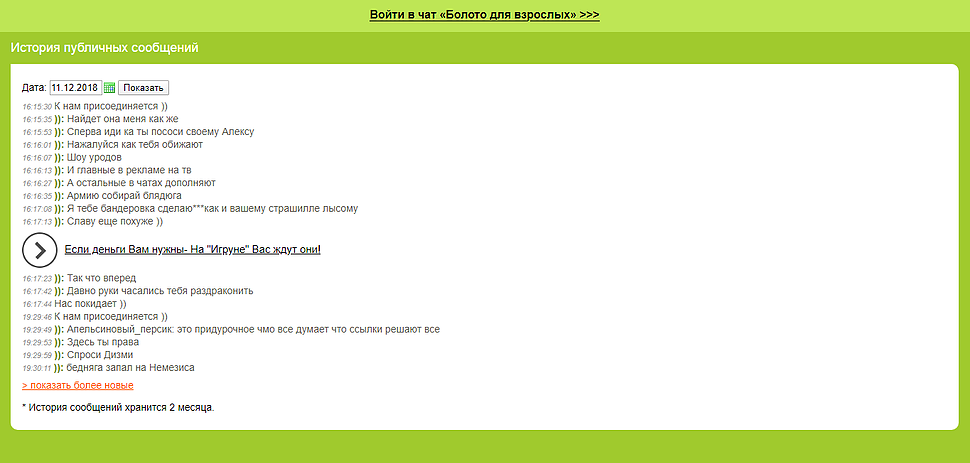
Потом он начал вредить одному анимешнику с ником "Дизми", который является администратором чата под названием "Троллфейс". Нарушитель хотел, чтобы он больше не правил тем чатом. Он хотел так, потому что ненавидит анимешников и троллей. Но тот чат не нарушал правила использования сервиса Чатовод, да и вообще никто из его администраторов не троллил за пределами того чата. Тот чат никому не мешал.
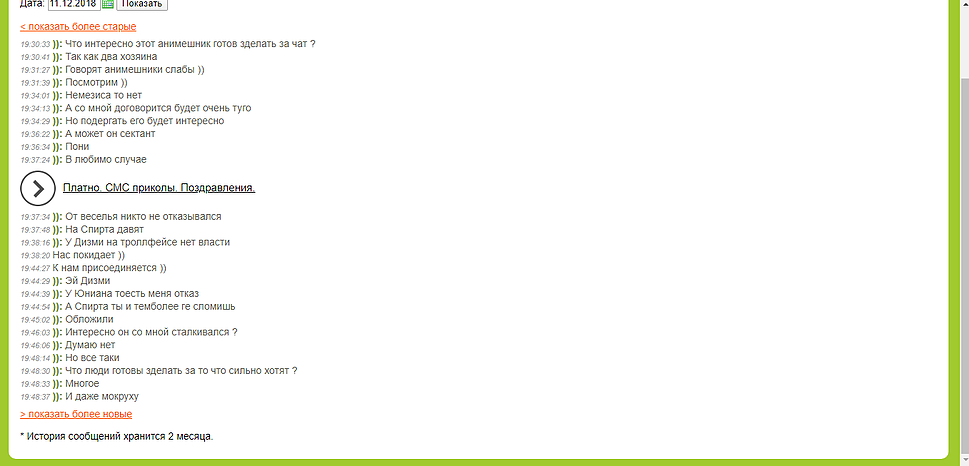
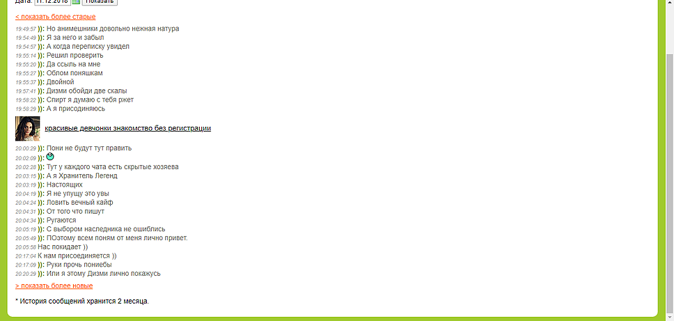
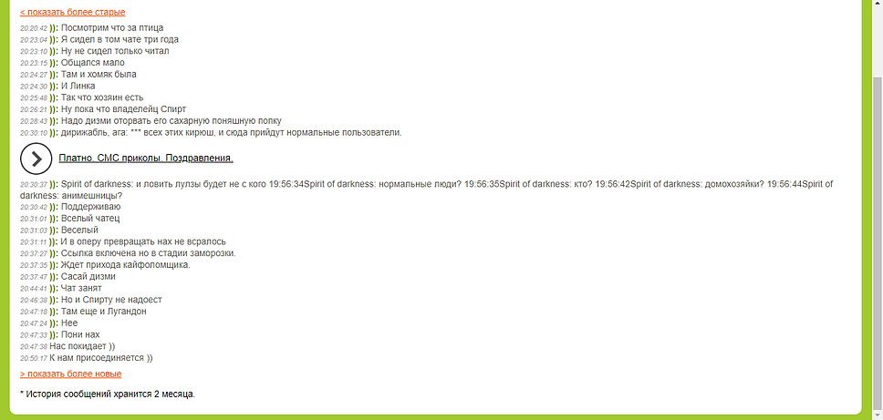
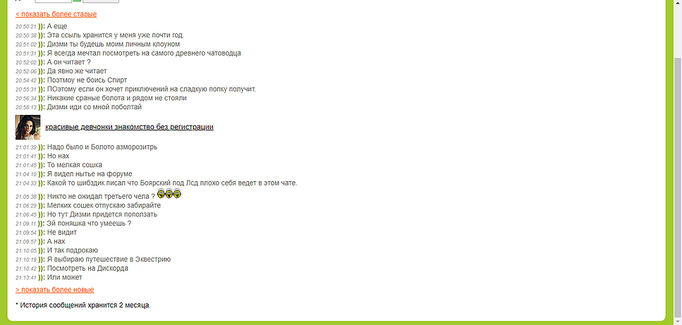
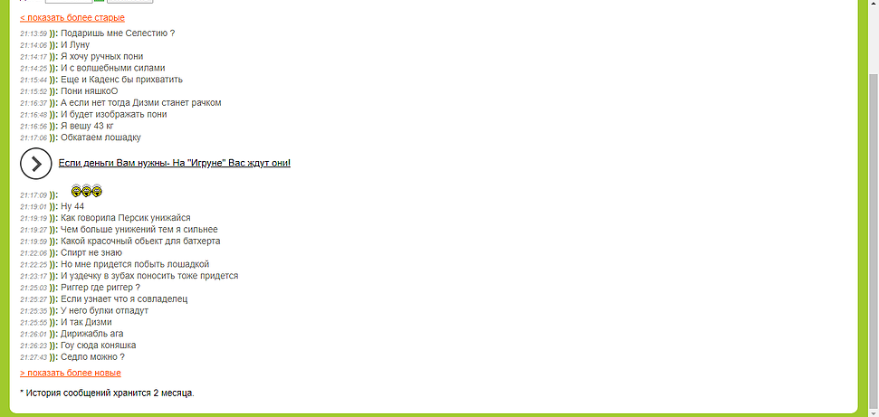
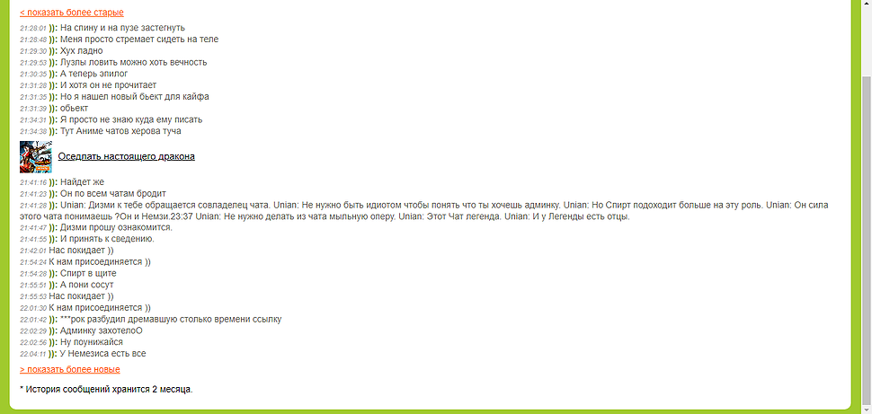
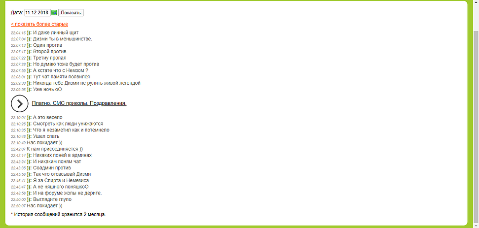
12 декабря 2018: стал оскорблять Яценюка, и хвалить игру Wolfenstein: The New Order (Вольфенштейн: Новый порядок).
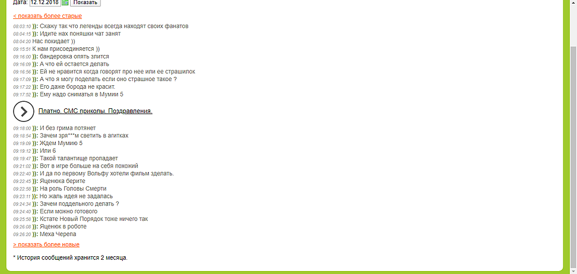
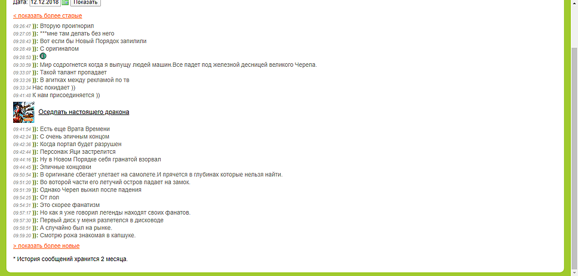
13 декабря 2018 - 29 декабря 2018: продолжал заниматься вредительством тем людям, про которых было написано выше.
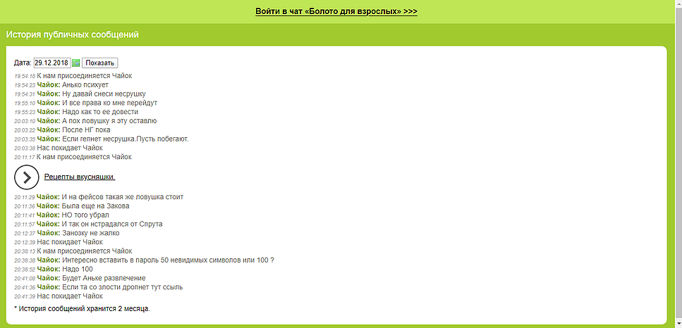
18 декабря 2018: нарушитель решил прорекламировать свой украденный чат, и оставил к статье по адресу https://chats.fandom.com/ru/wiki/Чатовод комментарий: "http://gamerealanime.chatovod.ru/ Чат для общения.". Потом он решил прорекламировать этот же чат на форуме Чатовода: http://forum.chatovod.com/viewtopic.php?id=4265. Он оставил сообщение: "Так как старый Аниме чат сделали закрытым.То мною было решенно зделать запасной.В данном чате можно все.Ссылки на любые ресурсы,ругательства,общение без регистрации,флуд,разговор на любые темы.Данный чат доступен по адресу http://gamerealanime.chatovod.ru/ Все желающие заходите и развлекайтесь как Вам угодно.Надзора за чатом не осуществляется.". 26 декабря 2018: нарушитель там же решил прорекламировать свой второй чат, и оставил комментарий: "http://123456www.chatovod.ru/ Бомбоубежище Троллфейсов". 27 декабря 2018: нарушитель решил также прорекламировать свой чат на форуме по адресу http://chatovod.0pk.ru/viewtopic.php?id=1. Он оставил сообщение: "http://123456www.chatovod.ru/ Бомбоубежище Троллфейсов". Январь 2019: в чате https://incest1.chatovod.ru кто-то размещал ссылки, ведущие на IP-логгеры. Нарушитель захотел устроить на эти IP-логгеры DDOS-атаку, и стал заходить на ссылки с разных IP-адресов много раз. Но это не считалось за DDOS-атаку, а значит, IP-логгеры нарушителю сломать не удалось. Позже нарушитель решил затроллить одного пользователя с ником, изображающим кошачьи ушки (=.= или =^.^=). Он подделал этот ник, и начал всех троллить, называя их рабами. 11 февраля 2019: нарушитель украл ещё один чат, и оставил к статье, адрес которой был указан выше, комментарий: "http://fortress-of-loneline.chatovod.ru/ Отличный чат для общения и знакоств.Приходите и распологайтесь поудобнее.Общение без ограничений.". 23 февраля 2019: нарушитель решил немного навредить и сделать дурную славу одной женщине, которая ему не понравилась. Он оставил комментарий к статье: "Всеми не любимая,отвратительная,омерзительная бабушенция ищет себе мужчину.Эта дамочка с очень отвратительными манерами вечно орущая абсолютно во всех чатах.Ее везде банят так как она частенько невадэквате и постоянно нарывается.Сидит под никами Нлдь или Metamorphosis.Ей приблизительно 33 года.Вот вам ее фотография https://a.radikal.ru/a02/1902/bf/4e64939ba804.png Забирайте ее на свой страх и риск.Дамочка любит кунигулус.И жесткую порку в попочку с размазом.". Потом он написал на форум Чатовода (http://forum.chatovod.com/viewtopic.php?id=4365) сообщение: "Здравствуйте Администрация Сервиса Чатовод.Пишу вам по такому вот вопросику.У меня тут много пустынных аккуантов к которым у меня нет доступа.По разным причинам от одних утерян номер и ящик нельзя восстановить.От других пароль который нельзя восстановить без ящика.Есть возможность чистки таких аккунтов чтобы не висели мертвым грузом.?Данные аккуанты находяться на зарубежном сервере Чатовода.Мне уже обьяснили что с зарубежного Чатовода нельзя удалиться.Но все же хочу узнать как такое возможно.Андрей если не трудно отпишитесь по данному вопросу.Просто много не нужного.Которое не подлежит восстановлению.Но висит в системе как грузилло.Заранее спасибо за внимание.". 19 марта 2019: нарушитель захотел сделать так, чтобы когда чат https://trollface667.chatovod.ru удалится, то потом создать этот же чат не получится. Про этот чат уже было написано выше, он никому не мешал, и был с названием "Троллфейс". Нарушитель воспользовался моментом, когда сервер Чатовода станет недоступен, и создал чат на другой версии Чатовода: https://trollface667.chatovod.com. Потом он решил прорекламировать этот чат в статье, указанной выше. Он написал комментарий: "https://trollface667.chatovod.com отличный чат для общения.Название говорит само за себя что чат для троллфейсов.Троллфейсы разной масти.И любые другие юзеры заходите и общайтесь.". 28 марта 2019: нарушитель решил также прорекламировать свой чат https://trollface667.chatovod.com в чате https://3036.chatovod.ru. Он написал сообщение: "[Ссылки запрещены] отличный чат для общения.Название говорит само за себя что чат для троллфейсов.Троллфейсы разной масти.И любые другие юзеры заходите и общайтесь.". Как видно, в том чате было автоматически запрещено размещать ссылки. 4 апреля 2019: нарушитель сказал про то, как ему выключили Интернет 2 дня назад, и про то, что он не может создать чат с определённым адресом из-за этого.
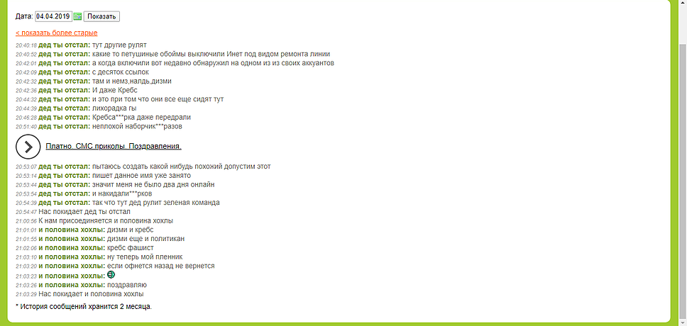
9 апреля 2019: нарушитель стал оскорблять правительство Украины, и говорить про свой компьютер.
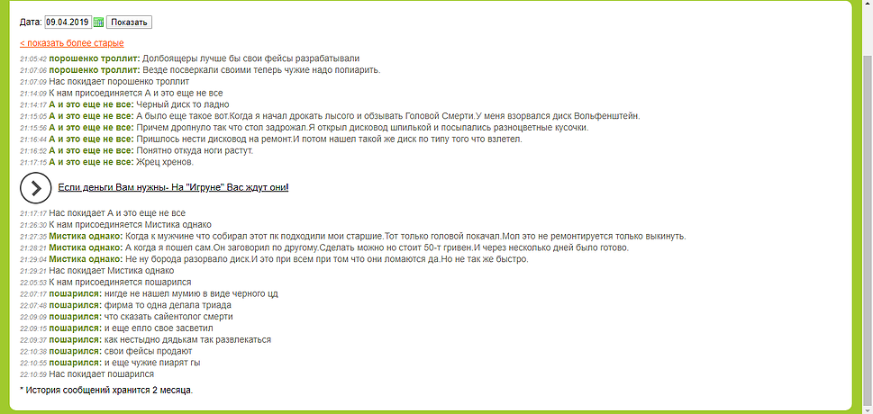
12 апреля 2019: нарушитель рассказывает, как ему пытались дать деньги, а он отказался, потому что ему они не нужны.
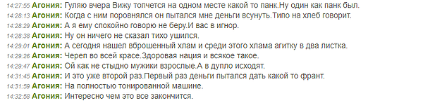
14 апреля 2019: нарушитель стал обсуждать концерты, которые вещают по Интернету и ТВ.
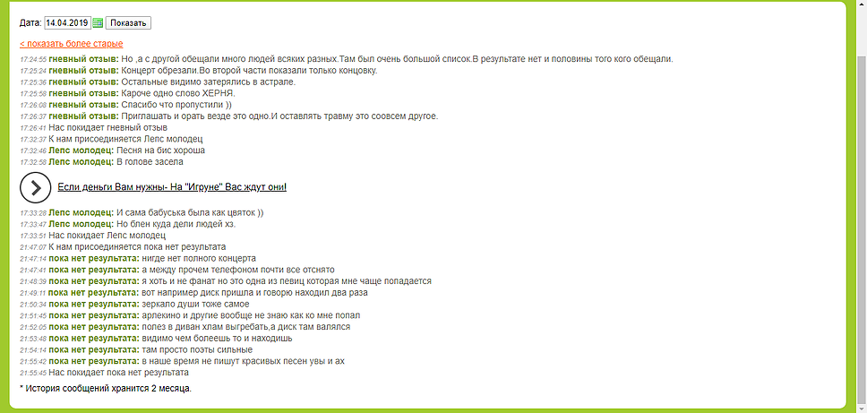
16 апреля 2019 - 26 апреля 2019: продолжал обсуждать игры, музыку, и книги, про которые было написано выше.
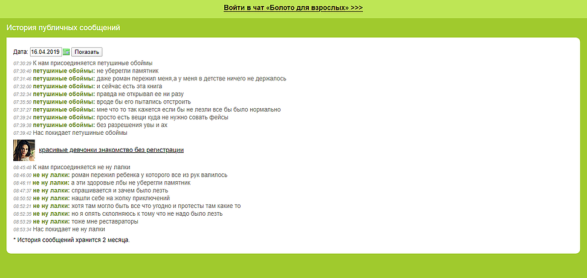
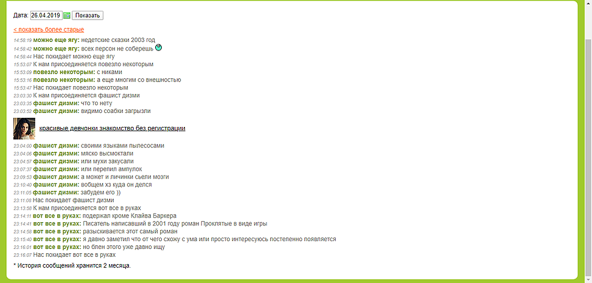
27 апреля 2019: нарушитель начал вредить одному пользователю с ником "Ветер", у которого было много чатов. Нарушитель хотел забрать некоторые чаты у этого пользователя.
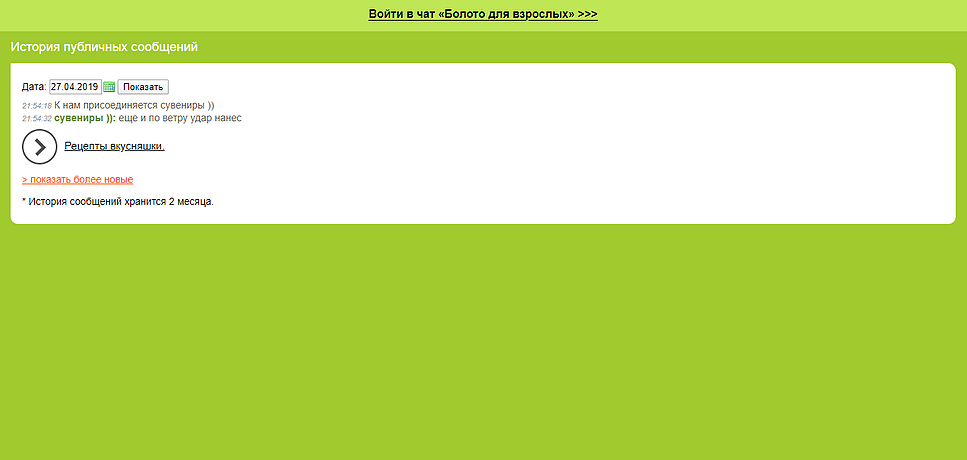
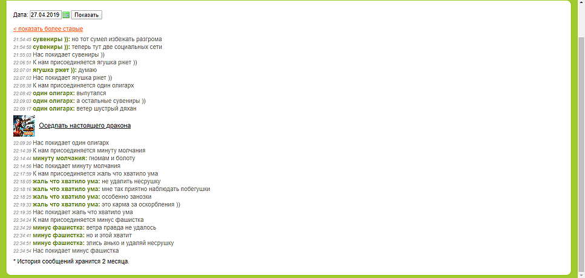
30 апреля 2019: нарушитель увидел, как в чате пользователь с ником "Уолтер" говорил про свои увлечения. Этот пользователь был врагом нарушителя, а значит нарушитель стал его троллить. Из-за этого "Уолтер" удалил свой аккаунт. Примечательно, что у этого пользователя и у нарушителя одинаковый стиль речи. Возможно, что это он сам и есть.
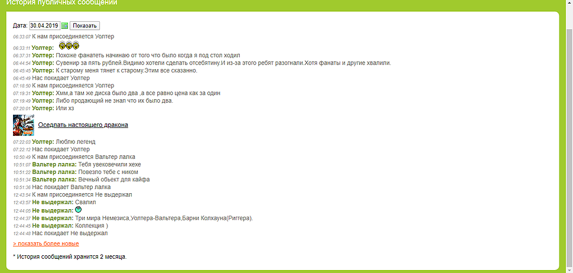
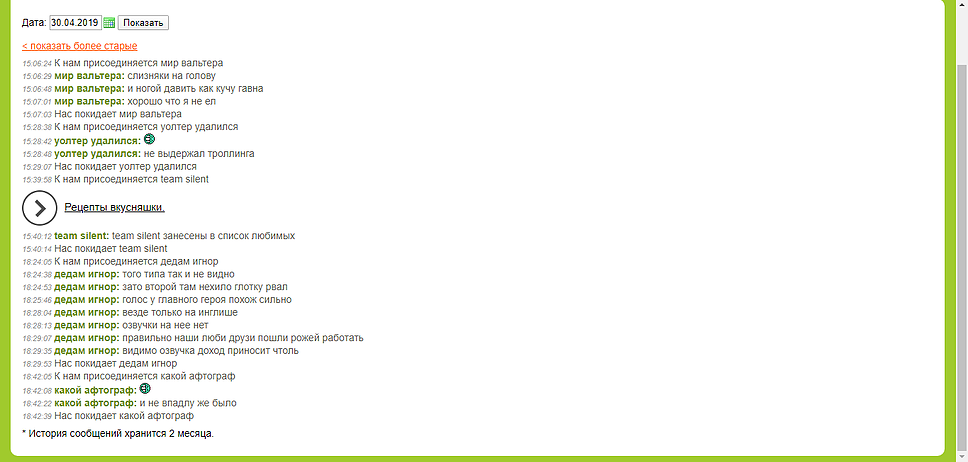
2 мая 2019: нарушитель заходил со своего зарегистрированного ника Unian в некоторые чаты, возможно для того, чтобы занять этот ник, то есть сделать его доступным только для себя. Потом он стал вредить "деду", и писать его IP-адрес. Затем он нашёл один символ, который позволяет входить с пустым ником (этот баг пофиксили летом 2019). Также он позволяет подделать чужой ник. Таких символов было несколько, и диапазон их кодов был от ̃ до ͯ включительно. Он решил потроллить пользователей в чате по адресу https://incest1.chatovod.ru, подделывая их ники. То же самое он проделывал в чате по адресу https://chatphpdlyadetey.chatovod.ru. Также он удалил свои украденные чаты, наверное для того, чтобы все думали, что он хочет примирения. А затем он попрощался.
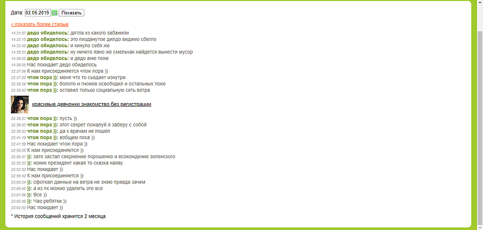
5 мая 2019: чат по адресу https://trollface667.chatovod.ru удалил хозяин того чата, по причине ненадобности. Выше было написано, что нарушитель хотел сделать так, чтобы когда этот чат удалился, создать чат с таким же адресом больше не получится. Сделал он это, создав чат https://trollface667.chatovod.com. Но нарушитель решил удалить этот созданный ранее чат. Но потом хозяин чата https://trollface667.chatovod.ru создал этот чат, так как создать чат с таким же адресом стало возможным. Проще говоря, он "перехватил" этот чат: нарушитель удалил чат, а хозяин его создал.
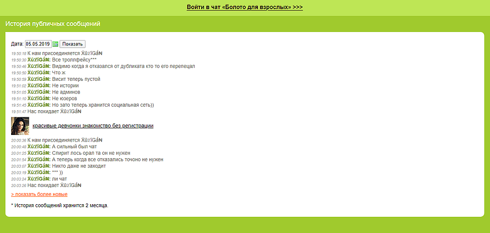
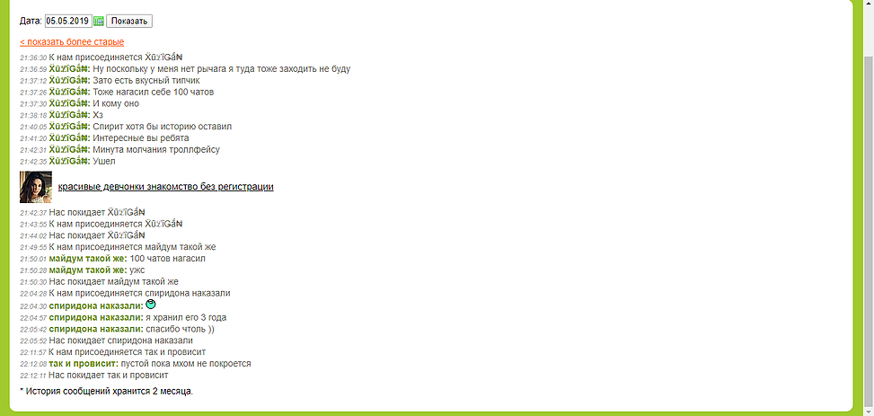
8 мая 2019: в чате по адресу https://trollface667.chatovod.ru стала включена обязательная регистрация пользователей при входе в чат. Из-за этого девочка по прозвищу "хомяк", про которую было написано выше, создала чат https://trollface666.chatovod.ru. Нарушитель сначала сказал про это в чате.
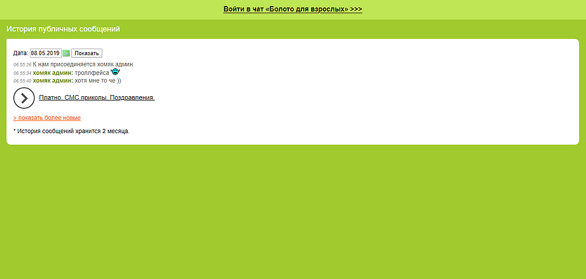
Потом он зашёл в чат https://trollface666.chatovod.ru, и стал общаться с той девочкой, которая была администратором чата. Возможно, они даже общались на тему секса в привате, потому что нарушитель был педофилом. 9 мая 2019: нарушитель решил закрыть чат по адресу https://incest1.chatovod.ru, который был на тему инцеста. Но в этом чате очень редко слали порнографию и запрещённые фотографии. Нарушитель решил написать жалобу на одного любителя порно, который был его врагом, и дал ему прозвище "дед". Так как в том чате администратор не показывался, то его закрыли, как и ожидал нарушитель.
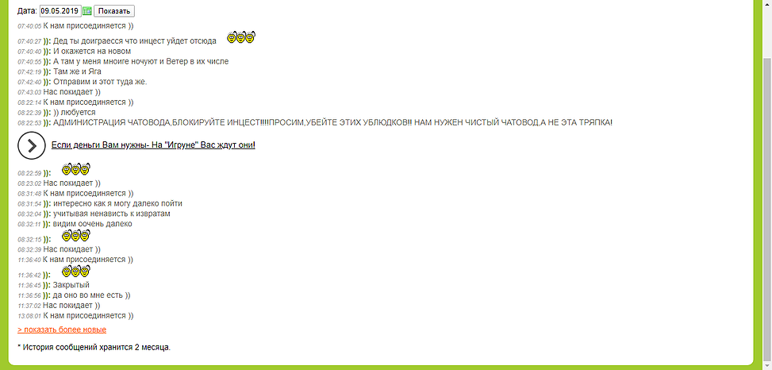
Потом нарушитель каким-то образом создал чат https://incest1.chatovod.com, при том, что создать два чата с одинаковым адресом на https://chatovod.ru и https://chatovod.com нельзя, даже если один из них закрыт. Он написал об этом в чате, назвав "дедом" девушку, которая состояла в "гномах", у неё был ник "Апельсиновый_персик". Про неё было написано выше. Её зовут Анна, также у неё был ник "Занозка". Дело в том, что эта девушка была как раз администратором чата https://incest1.chatovod.ru, но скорее всего она создала чат просто так, и не ожидала, что в том чате будет много людей и запрещённые фотографии.
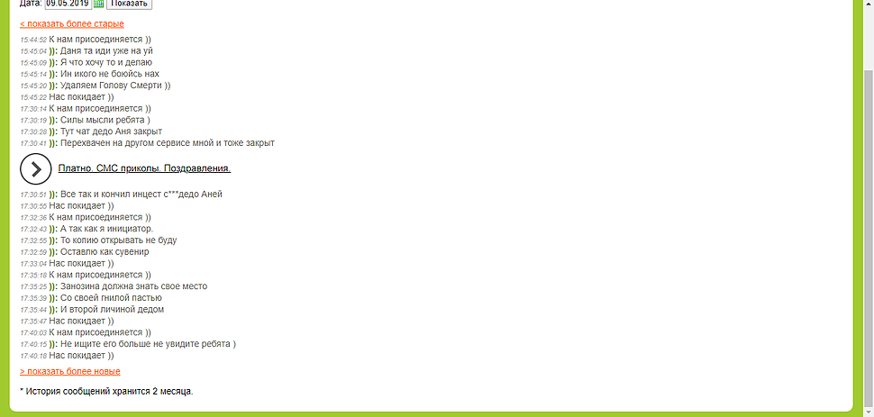
Потом кто-то создал новый чат на тему инцеста по адресу https://1incest.chatovod.ru. Нарушитель написал об этом в чате.
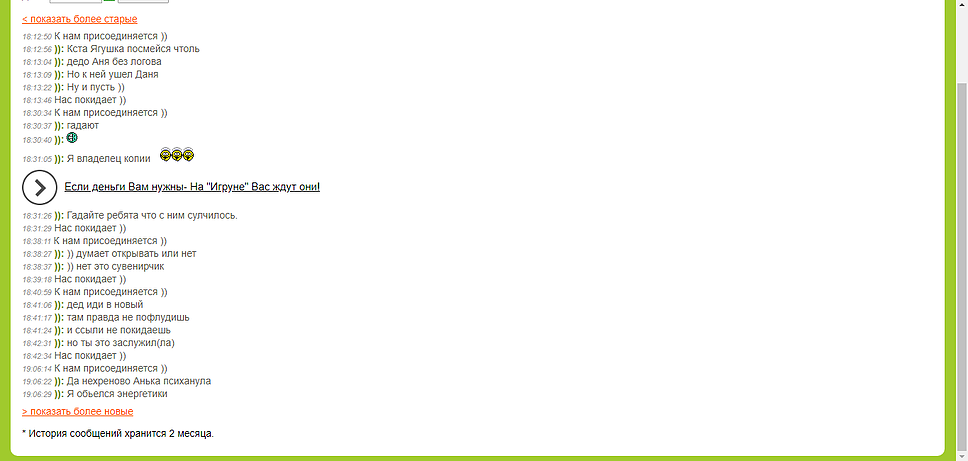
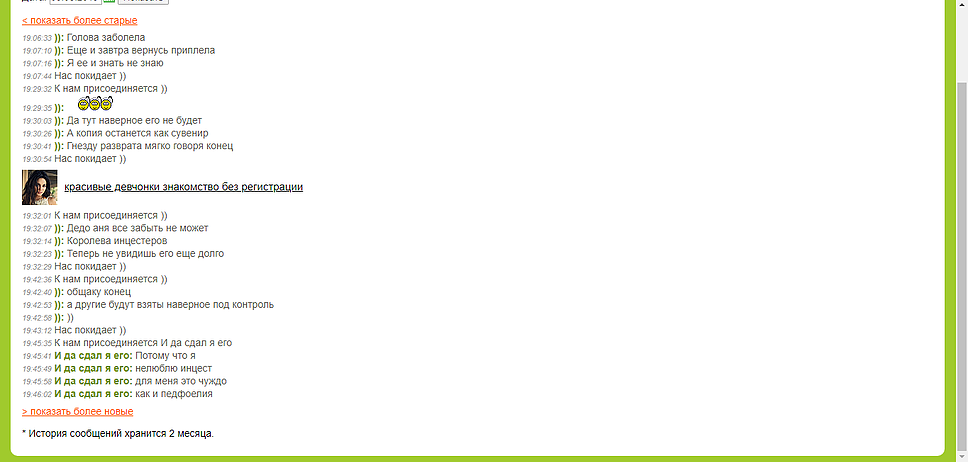
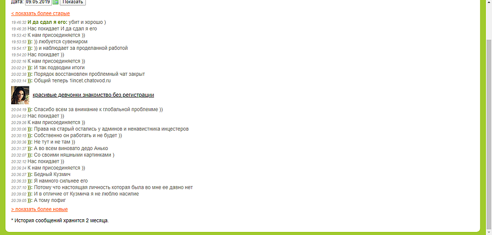
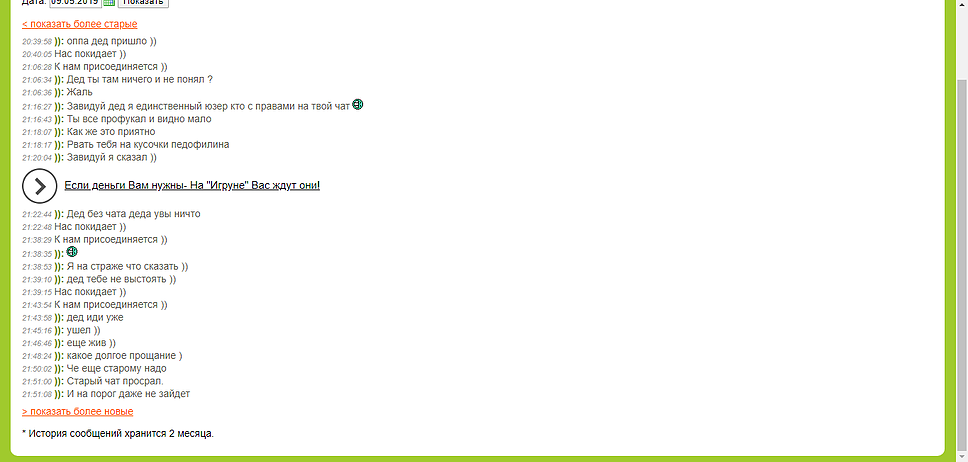
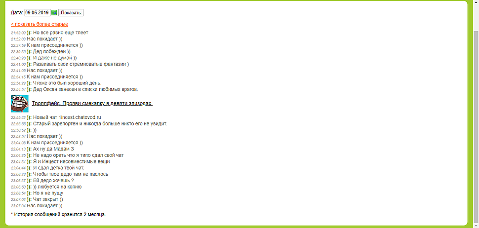
10 мая 2019: нарушитель стал называть чаты на тему инцеста, которые были сделаны недавно.
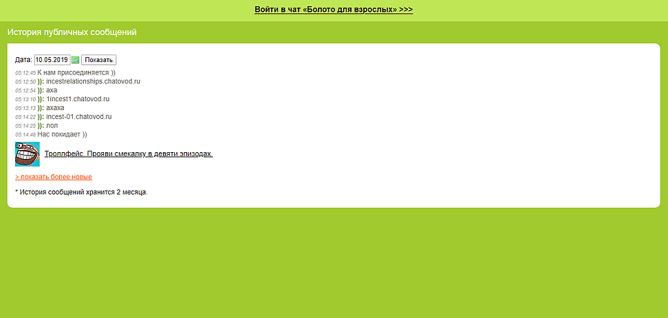
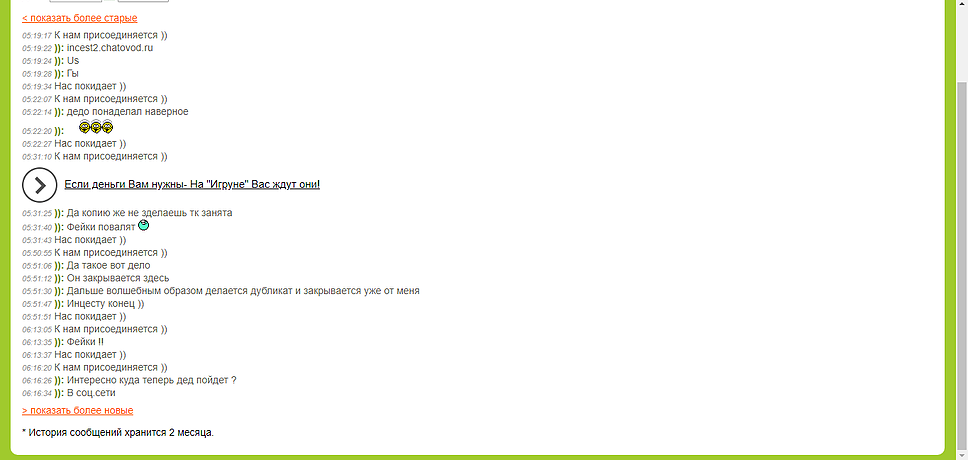
10 мая 2019 - 13 мая 2019: нарушитель продолжал вредить всем тем, про которых написано выше. 13 мая 2019: нарушитель создал чат https://moder.chatovod.com, также с помощью бага.
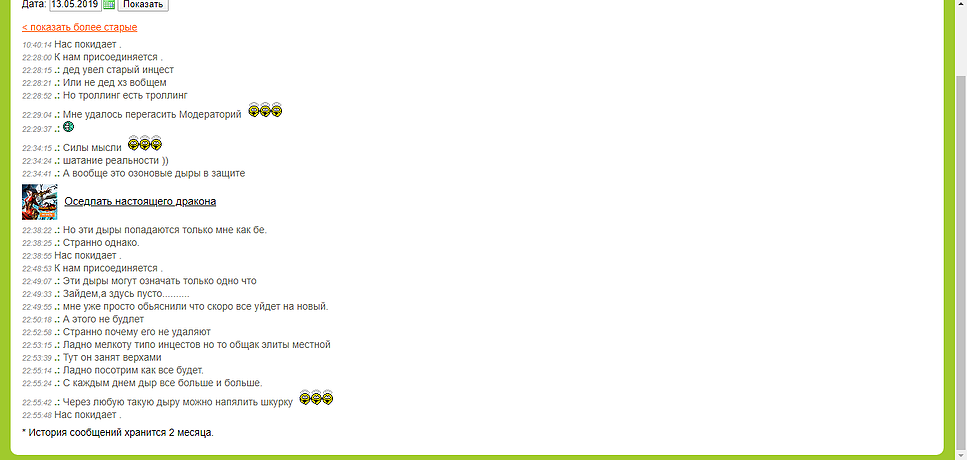
16 мая 2019: нарушитель с помощью такого же бага создал чат https://shiza-org.chatovod.com. В этот раз он назвал дедом создателя того чата - Дениса Тихомирова.
1 июня 2019: нарушитель с помощью такого же бага создал чат https://cheburachka.chatovod.com.
2 июня 2019: нарушитель сказал, что собирается отказаться от Интернета.
3 июня 2019: нарушитель решил напомнить, что он с помощью бага сделал так, что когда определённые чаты удалятся, создать с таким же адресом чат не получится, потому что он занял их заранее на https://chatovod.com. Из-за этого он обратно включил Интернет.
11 июня 2019: на чат по адресу https://1incest.chatovod.ru поступила жалоба за порнографию, которой спамил один любитель порно. Так как администратор того чата не показывался, чат закрыли. Потом тот же человек, который написал жалобу, создал чат https://2incest.chatovod.ru. Но он не скрывал, что он администратор этого чата. Из-за этого пришёл нарушитель, и, увидев администратора, стал его троллить.
Потом нарушитель стал спамить порно, только ссылками.
Хозяин чата попытался забанить нарушителя, но он обошёл бан.
Нарушитель троллил хозяина чата не один, а с другим троллем, вполне сильным, который, скорее всего, является другом нарушителя. Слова другого тролля можно увидеть, они не обведены красным. Слова нарушителя также, как и на скринах выше, обведены красным. Другой тролль на этом скрине пишет под ником "АДМИН ОТСОСАЛ ТРОЛЛЮ".
Этот другой тролль тоже стал слать ссылки на порно. На этом скрине он под ником "Дрочер". Красным обведены также слова нарушителя.
Потом нарушитель стал называть хозяина чата "Багирой". "Багира" - это ник одного пользователя, который обычно сидит в инцест чатах. Больше про этого пользователя ничего не известно. Но хозяин чата, скорее всего, никогда не сидел с ником "Багира", а нарушитель назвал его "Багирой" просто так. Также нарушитель стал писать, что напишет жалобу на чат в администрацию Чатовода и в Роскомнадзор, несмотря на то, что в том чате никто не спамил порнографией, кроме этого нарушителя и другого тролля. И ссылки на порнографию либо удалял хозяин чата, либо закрывал их флудом, из-за невозможности слишком быстро удалять ссылки.
Потом нарушитель с помощью бага сделал себе пустой ник, решив, что хозяин чата не сможет его забанить. Но он всё же смог забанить нарушителя.
Потом нарушитель стал говорить про то, что если хозяин чата удалит свой чат, то больше создать чат с таким же адресом не получится. Как и было описано выше, нарушитель может так сделать, создав чат с таким же адресом в https://chatovod.com.

12 июня 2019: хозяин чата https://2incest.chatovod.ru не понял слов нарушителя, и сказал, что захватить чужой чат невозможно, если только не обратиться к администрации Чатовода. В ответ нарушитель объяснил, что так можно сделать, когда основной сервер Чатовода по адресу https://chatovod.ru будет недоступен. Нужно создать чат с таким же адресом на втором сервере Чатовода по адресу https://chatovod.com. В итоге, когда чат на основном сервере решит удалить сам хозяин, то он автоматически становится занятым. А значит, создать чат с таким же адресом будет невозможно. После того, как нарушитель объяснил это, его забанил хозяин этого чата. Но он обошёл бан, и спокойно сказал, что всё равно сможет захватить этот чат.
Потом нарушитель стал говорить, что Чатовод находится под контролем ФСБ, и рекомендовать хозяину чата удалить этот чат. На самом деле никакого контроля нет, а нарушитель сказал так, потому что хотел занять адрес чата https://2incest.chatovod.ru. Но хозяин чата отказался его удалять
Потом нарушитель написал, что отправил жалобу на хозяина чата, из-за того, что просто ненавидит инцест. В тот чат ходило немного людей, и они не общались на тему инцеста. Только в названии и адресе того чата было написано про инцест. Соответственно, и нарушитель хочет закрыть все чаты только из-за названия.
На скрине выше виден пользователь под ником "админ". Этот пользователь является хозяином другого чата по адресу https://incest2.chatovod.ru. В тот чат заходил хозяин чата https://2incest.chatovod.ru. А значит, пользователь с ником "админ" мог видеть его IP адрес. На скрине ниже он его напишет в чат.
Потом пользователь с ником "админ" написал IP адрес другого пользователя, который тоже входил в его чат https://incest2.chatovod.ru. В это же время нарушитель искал информацию по IP адресу хозяина чата https://2incest.chatovod.ru, который указан на скрине выше. Нарушитель нашёл сайт, на который он заходил, и который хранит все IP адреса и Useragent'ы пользователей, которые заходят на этот сайт. Нарушитель нашёл Useragent хозяина чата, и написал его в чат, назвав его "гео-координатами". Но хозяин чата решил удалить этот Useragent из чата. Также он предположил, что нарушитель и хозяин другого чата являются администрацией Чатовода, раз они смогли узнать его IP адрес и Useragent.
Потом нарушитель стал рассылать по всем чатам и вне их IP адрес хозяина чата и другие его данные. У самого хозяина чата появилось другое предположение, что пользователь, который спамит порнографией в чатах и есть сам нарушитель, и в порнографические картинки встроен IP логгер. С помощью этого IP логгера нарушитель и узнал IP адрес и Useragent хозяина чата. Но на самом деле с помощью картинок, отправляемых прямо в чат, узнать данные никак не получится, если не переходить по ссылкам. Все картинки, отправляемые в чат, сначала загружает специальный бот Чатовода для передачи картинок, а потом в чат отправляется картинка, загруженная уже в память бота. А значит, с помощью IP логгера можно только узнать IP адрес этого бота.
19 июля 2019: нарушитель каким-то образом взломал аккаунт хозяина чата по адресу https://trollface667.chatovod.ru, и сменил дизайн этого чата. Также он поставил стандартные настройки чата, и сделал так, чтобы все буквы в сообщениях пользователей заменялись на смайлы. Потом он пришёл в чат по адресу https://chatphpdlyadeteii.chatovod.ru. Этот чат создала девочка по прозвищу "хомяк", про которую было написано выше. Чат был создан из-за закрытия администрацией Чатовода чата по адресу https://chatphpdlyadetey.chatovod.ru. Тот чат был закрыт из-за жалобы на порнографию, которой спамил один тролль, он небольшой любитель порно. Также в чат https://chatphpdlyadeteii.chatovod.ru приходил не только нарушитель, но и тот самый тролль. Они обсуждали чаты, и некоторые баги Чатовода. Потом пришла хозяйка чата, и тоже начала это обсуждать. Потом она решила удалить свой чат, и создала другой чат по адресу https://chat-php-dlya-detey.chatovod.ru. Все трое теперь перешли туда. 20 июля 2019: нарушитель создал чат по адресу https://kiskacult.chatovod.ru, после его удаления хозяином того чата. Нарушитель хотел занять этот адрес чата, потому что хозяин чата был его врагом. Врагом он считал его, потому что в его другом чате было много троллей, которые "лезли" к нарушителю. 26 июля 2019: после того, как хозяину чата https://trollface667.chatovod.ru удалось восстановить свой аккаунт и этот чат, туда пришёл нарушитель. Он сказал, что всё равно сможет захватить чат. Хозяин чата ответил, что захватить чат возможно, только если он сам его удалит. Потом туда пришёл тролль, про которого было написано выше, и тоже стал обсуждать эту тему. Нарушитель сказал, что "перехватил" чат по адресу https://minetchica.chatovod.ru, потому что его удалил сам хозяин чата. Также он сказал, что после "перехвата" он может видеть пароли всех пользователей, которые туда вошли. На самом деле же это неправда. Потом аккаунт тролля, который общался в чате, взломали. Взломщик пришёл в чат по адресу https://trollface667.chatovod.ru, в котором он общался, и сказал, что взломал его через открытый порт 445. На самом деле никого взломать таким способом не получится, даже если у жертвы нет роутера, потому что у всех провайдеров стоит защита от подключений из внешней сети к устройствам, которые подключены только к самому провайдеру, даже напрямую. Взломщик смог взломать тролля, потому что его аккаунт был зарегистрирован на временную почту. А на сайте той временной почты был баг, с помощью которого взломщик узнал пароль от аккаунта тролля. Возможно, этого взломщика заказал нарушитель, или он был просто его другом, потому что нарушитель тоже ненавидел тролля. 27 июля 2019: нарушитель прорекламировал свой украденный чат в википедии Чатовода по адресу https://chats.fandom.com/ru/wiki/Чатовод. Он оставил комментарий: "https://minetchica.chatovod.ru чат для общения и знакомств на тему секса". 30 июля 2019: нарушитель решил сильно нагрузить чат по адресу https://trollface667.chatovod.ru. Он зашёл туда, примерно, с 20 ников одновременно. Хозяин того чата попытался забанить эти ники, но нарушитель возвращался туда снова с большим количеством ников. 31 июля 2019: нарушитель захотел окончательно захватить чат по адресу https://trollface667.chatovod.ru. Он написал в том чате, что отправил жалобу на чат. Причина жалобы была одна и та же: нарушитель ненавидит абсолютно всех троллей. Но потом хозяин этого чата сам закрыл его, и создал новый чат для троллей по адресу https://okayface667.chatovod.ru. Но передумал, и решил открыть чат по адресу https://trollface667.chatovod.ru. Нарушитель всё же немного добился своего: хозяин чата перестал появляться 2 месяца, и, соответственно, вернулся в начале-середине октября. Скорее всего, ему надоело терпеть этого нарушителя. 22 августа 2019: так как чат по адресу https://trollface667.chatovod.ru остался на месте, нарушитель решил вредить троллям, которые там обитают. Он узнал IP адрес самого ненавистного ему тролля, а потом начал искать информацию по нему, и писать в чат. Также он спамил этими данными и вне чатов, в том числе и в википедии Чатовода. Она расположена по адресу https://chats.fandom.com/ru/wiki/Чатовод. В ответ тролль решил воспользоваться тем, что нарушитель заходил в его чат. Он просмотрел его IP адрес, и начал тоже им спамить, но только в пределах чата по адресу https://trollface667.chatovod.ru, других чатов, и википедии Чатовода. Также тролль заманил нарушителя на IP логгер, и узнал ещё его Useragent. Также в том чате сидел один программист, который любил пофлудить там. Для этого он использовал свою программу для флуда. Нарушитель решил написать жалобу на этого программиста и на тролля, чтобы их аккаунты удалили. Он решил наврать администрации Чатовода, и сказать, что программа для флуда является вирусом, а тролль вычисляет IP адреса и Useragent'ы абсолютно всех пользователей, хотя он вычислил только нарушителя, за то, что он узнал его данные. Нарушитель написал жалобу на форум Чатовода - http://forum.chatovod.com/viewtopic.php?id=4521. Он оставил сообщение: "Здравствуйте уважаемые Форумчане и Администрация Сервиса Чатовод.Хочу написать по поводу одного чата старое название которого Старый Приятель Троллейбус но теперь его название разное.В данном чате происходит беспредел следующего характера.В нем появились двое человек.Эти искомые человеки тобишь люди занимаются якобы хакерством.А именно каким вот например юзе который сидит в Системе Чатовода с профилем http://trollface667.chatovod.ru/id2756861 каким то образом вычисляет чужие ip адреса и не скрывая этого пишет их в чаты.Также вычисляет другие данные типо ЮзерАгента системы Windows.И еще спамит этими данными по всем чатам Системы Чатовода.А есть в данном чате еще один юзер профиль в Системе Чатовод вот этот https://chat.chatovod.ru/id2759933 этот пользователь занимается разработкой каких то программок спамеров.Программу что он разработал называется botik.exe запакован в архив rar.При проверке данной программы антивирусными системами был обнаружен Троян.Проверка производилась онлайн в Системе Касперского.Данный файл загружен на файлообменник и распространяется в чате о котором идет речь.Адрес данного чата https://trollface667.chatovod.ru Данный чат совершенно не администрируется.Администратор не заходит уже давно.Жалоба по поводу данного чата уже была отправлена на почту.Насколько я так понял в чате есть вирус.И один из юзеров что занимаетя этим беспределом известен как ЗАКРЫВАТЕЛЬ ЧАТОВ,Он спамил фотографиями с ПД в закрытом чате для детей.Спамил данным фотографиями и в чате для троллей.Есть история в данном чате которую можно читать не заходя в сам чат.Пожалуйста наведите порядок в данном чате.Скриншоты беспредела я отсылал в жалобе по почте.". 23 августа 2019 - конец августа 2019: нарушитель продолжал спамить данными тролля. Начало сентября 2019: нарушитель решил занять адрес чата https://mypolice.chatovod.ru после его удаления. Он создал чат https://mypolice.chatovod.com. 6 сентября 2019: нарушитель стал троллить одного спамера порно, который тоже был троллем. Это всё происходило в чате по адресу https://11incest11.chatovod.ru. Потом нарушитель пришёл в чат по адресу https://brucehime.chatovod.ru. Этот чат был чатом "гномов", про которых было написано выше. Он решил подружиться с ними после вражды, так как они были знакомы. Нарушитель попросил сделать себя модератором в этом чате. В итоге его сделали модератором. 7 сентября 2019: нарушитель опять стал троллить и вредить тому троллю, про которого было написано выше. Он написал, что проклял того тролля, и он умрёт в Новый Год, прямо в полночь.
На скрине видно, что нарушитель назвал тролля "закрывателем". Он назвал его так, потому что у него был в некоторых чатах ник: "ƷÃĶƤЫßÅŢĒЛЬ ЧΆŤØḂ". 8 сентября 2019: нарушитель написал, что сделал какие-то манипуляции, и смог скачивать песни и фильмы там, где это невозможно.
9 сентября 2019: нарушитель продолжал угрожать смертью троллю.
10 сентября 2019: в чат по адресу https://brucehime.chatovod.ru, где модерировал нарушитель, пришёл тот самый тролль, и начал троллить его из-за того, что нарушитель тоже троллил и вредил ему. Нарушитель стал его банить, но он обходил баны. В итоге нарушитель не выдержал и ушёл. 13 сентября 2019: нарушитель решил удалить свои чаты, созданные на https://chatovod.com, которые были созданы для того, чтобы когда чат на https://chatovod.ru удалится, больше занять такой же логин чата будет невозможно. В их число входят чаты: https://cheburachka.chatovod.com, https://shiza-org.chatovod.com, и https://trollface667.chatovod.com.
17 сентября 2019: нарушитель зашёл в чат по адресу https://trollface667.chatovod.ru, и написал IP адреса и электронные почты пользователей под никами "Майдум" и "Ветер". 23 сентября 2019: нарушитель написал, что все его комментарии на видеохостинге YouTube отображаются без имени. Скорее всего, он сам сделал себе невидимое имя и название канала.
30 сентября 2019: нарушитель решил удалить свой аккаунт на YouTube, аккаунты на https://chatovod.com, и электронные почты на https://bigmir.net и https://tutanota.com.
1 октября 2019: нарушитель решил удалить свой аккаунт с ником Union, который с помощью бага он сделал всегда онлайн в чате https://trollface667.chatovod.ru (он называет этот баг "ботом"). Также он решил удалить свою электронную почту на https://www.rambler.ru.
Потом он решил удалить свой аккаунт с ником Юниан.
2 октября 2019: нарушитель решил создать чаты с адресами, которые существовали раньше, но были удалены. У него не получилось завладеть чатами: https://trollface668.chatovod.ru, https://okayface667.chatovod.ru, и https://riggerrulled.chatovod.ru. Но у него получилось завладеть чатами: https://face2face.chatovod.ru, https://ilovepetrenchuk.chatovod.ru, https://tlei.chatovod.ru, и https://yfxbyftncz.chatovod.ru.
4 октября 2019: нарушитель пришёл в чат по адресу https://riggerrulled.chatovod.ru, который был заменой закрытого чата для троллей по адресу https://trollface667.chatovod.ru. Он сказал, что раз этот чат всего лишь замена, то он не имеет смысла.
5 октября 2019: нарушитель создал свой чат-замену закрытого чата для троллей по адресу https://trollface667.chatovod.ru. Адрес чата-замены - https://trolling667.chatovod.ru. Нарушитель решил прорекламировать свой чат в википедии Чатовода по адресу https://chats.fandom.com/ru/wiki/Чатовод. Он оставил комментарий: "https://trolling667.chatovod.ru отличное место для троллфейсов и умалишенных юзеров любящих писать бред.". 6 октября 2019: нарушитель написал, что хочет закрыть все чаты, которые ему не нравятся.
7 октября 2019: в чат по адресу https://trollface667.chatovod.ru пришёл его хозяин после 2-х месячного отсутствия. Он сделал открытым этот чат, зашёл туда, и сказал, что этот чат взломал и закрыл нарушитель, хотя на самом деле сам же хозяин его и закрыл. Потом в тот чат пришёл нарушитель, после чего хозяин решил удалить этот чат. 8 октября 2019: нарушитель решил забрать адрес чата https://trollface667.chatovod.ru себе, и создал чат с этим адресом, так как он стал свободным после удаления.
Потом нарушитель удалил свой чат по адресу https://trollface667.chatovod.ru, и создал чат с таким же адресом на chatovod.com (созданный чат был с адресом https://trollface667.chatovod.com).
Дальше историю его действий вы можете найти сами. Почти вся история действий, написанная здесь, происходила в чате по адресу https://ladvin.chatovod.ru. Вы можете зайти в этот чат, и прочитать историю сообщений.
Подробная информация о нарушителе:
Чаще всего сидит под никами Unian или Юниан. В данный момент (19.04.2020) у него нет аккаунта, и он сидит под разными никами.
Нарушитель забирает ники не у тех пользователей, которых он ненавидит, а почти у всех. Также почти у всех он забирает чаты. Ники он забирает, регистрируя их, а чаты - создаёт чат с таким же адресом на https://chatovod.com, несмотря на то, что это невозможно, или создаёт чат после его удаления. Также он может написать жалобу в администрацию Чатовода на любого неугодного ему пользователя. А ещё он спамит данными пользователей, и распускает сплетни про них, например то, что один пользователь - хакер, и любит спамить порнографией. Также нарушитель может написать, что какой-нибудь пользователь спамит данными других пользователей, хотя на самом деле это делает сам нарушитель.
Подробные данные про нарушителя:
История IP адресов:
18.12.2018 - 26.12.2018
178.137.187.34
11.02.2019
37.229.188.185
23.02.2019
37.229.187.227
19.03.2019
178.137.29.33
11.05.2019
37.229.137.96
11.06.2019 - 14.06.2019
37.229.166.190
22.06.2019 - 22.07.2019
37.229.178.197
24.07.2019 - 22.08.2019
37.229.166.116
22.08.2019 - 25.08.2019
37.229.131.196
28.08.2019 - 03.09.2019
37.229.180.52
10.09.2019 - 12.09.2019
37.229.139.81
30.09.2019 - 02.10.2019
37.229.180.52
04.10.2019 - 08.10.2019
37.229.166.116
09.10.2019 - 19.10.2019
37.229.139.17
26.10.2019
37.229.180.90
05.11.2019
37.229.185.188
09.11.2019
46.118.248.5
22.11.2019
178.137.189.55
07.12.2019
46.118.248.5
10.12.2019
178.137.189.55
14.12.2019
37.229.191.218
18.12.2019 - 25.12.2019
178.137.189.55
01.01.2020
178.137.186.77
20.01.2020 - 21.01.2020
46.185.110.105
24.01.2020
37.229.166.209
25.01.2020 - 26.01.2020
37.229.161.181
26.01.2020 - 28.01.2020
37.229.166.209
30.01.2020
37.229.168.164
31.01.2020
46.119.151.178
06.02.2020 - 09.02.2020
37.229.142.183
09.02.2020 - 10.02.2020
37.229.191.31
10.02.2020 - 11.02.2020
37.229.142.183
11.02.2020 - 16.02.2020
37.229.191.31
17.02.2020 - 28.02.2020
37.229.131.11
29.02.2020 - 04.03.2020
37.229.160.161
08.03.2020 - 12.03.2020
37.229.164.115
22.03.2020
178.137.67.202
26.03.2020 - 06.04.2020
37.229.160.83
13.04.2020
178.137.5.136
17.04.2020
46.185.105.97
Аккаунты нарушителя в Чатоводе:
Сначала идёт ник, потом идёт ID аккаунта, а потом идёт электронная почта, на которую зарегистрирован аккаунт.
Например, если ID аккаунта - 100, то чтобы посмотреть профиль, нужно перейти по ссылке https://chat.chatovod.ru/id100.
Если сначала идёт ID, а потом электронная почта, значит, аккаунт был удалён, и ник найти не удалось.
Но бывают удалённые аккаунты, которые здесь написаны с ником.
2766065 (удалён)
vladimirdzyubadzf@rambler.ru
Union (удалён)
2766058
unionits@rambler.ru
Юниан (удалён)
2766056
volodiadzyuba@yandex.ru
឵ (удалён)
2766055
vladimirdzfz100500@gmail.com
2766048 (удалён)
vladimirdzyuba@bigmir.net
2765976 (удалён)
vladimirdzyuba@tutanota.com
Себя (удалён)
2765096
fgryhtutyitujtuiti@bigmir.net
Санитар (удалён)
2765095
mhjkhlhkgjfgikgkgk@bigmir.net
Тантум Верде (удалён)
2765093
hgtutyiktyikyitutrir@bigmir.net
ƷÃĶƤЫßÅŢĒЛЬ ЧΆŤØḂ
2766092
zakrivatelchatov@rambler.ru
Ďĭŕøł♥ (удалён)
2767352
vladimirdzyuba@tutanota.com
Сторожевая псина
2766428
kjlkjklkkjjljjh@bigmir.net
2771019 (удалён)
vladimirdzyuba@bigmir.net
Fermindal Of Sairos
2771669
trollface667@protonmail.com
2774707 (удалён)
vladimirdzfz100500@gmail.com
Unian
2654288
super_voldemort@ukr.net
Юниан
2774710
vladimir.dzyuba@inet.ua
Юниан
2647570
dzjuba.volodja@rambler.ru
2775423 (удалён)
skypovod7@gmail.com
Флот гномов
2778557
detskiychat1@bigmir.net
Флот России (удалён)
2778558
ghtiutikyupopyktyk@bigmir.net
Дно гномов (удалён)
2778560
jyiyoyituryru@bigmir.net
шуша-алдфацк) (удалён)
2779754
hrthrutujriurifefwf@bigmir.net
Гномик на дереве (удалён)
2779785
jtyjktityiyuititit@bigmir.net
ƷÃĶƤЫßÅŢĒЛЬ ЧΆŤØḂ (удалён)
2779761
radio-shanson-fm@outlook.com
ᵘᶰᶦᵃᶰ (удалён)
2779815
i7o8o89p8o67io6o@bigmir.net
Feliks(фк Олимп) (удалён)
2779818
hkhkhkuykyktktk@bigmir.net
Unιan (удалён)
2779837
rghtrutyiu6ututu@bigmir.net
Ведьма_ (удалён)
2779839
fgryhtuityitiruru@bigmir.net
*Сега (удалён)
2779495
kizilkumis500@bigmir.net
Ведьма
2779430
joijoyouliya100@bigmir.net
Саша (удалён)
2779423
ferenederiles100@bigmir.net
лизун би (удалён)
2779420
heridiziyaliss50@bigmir.net
Юлия (удалён)
2779419
gferendizalfix400@bigmir.net
Ксюшкааа (удалён)
2779416
gerondizialf400@bigmir.net
Ксюшкаа (удалён)
2779415
kilinakanayses900@bigmir.net
Сега_ (удалён)
2779414
metidikipoff100@bigmir.net
я (удалён)
2779411
orientalfenix1001@bigmir.net
Шлюха (удалён)
2779409
totnekopfcherep@bigmir.net
раф (удалён)
2779406
teteuff1000@bigmir.net
Ксюшка
2779403
socialanxiety@bigmir.net
Юниан (удалён)
2778477
yaderniytrollface@bigmir.net
Русич (удалён)
2779861
hymythkuoluikluouyp@bigmir.net
вращаеццо в ачке юне
2779864
hytkjytouyyuotytoto@bigmir.net
пылесосмэн (удалён)
2779865
gmhkjhklhkgkgk@bigmir.net
БИГМИР
2779866
ghtujytituyjtrjhtrr@bigmir.net
это юниан регает
2779867
yjiuyio8o7uik7i67i6i@bigmir.net
нанананана (удалён)
2779869
grfhrtutititirturu@bigmir.net
тынтя ну ты чё (удалён)
2779870
fetgeytryurururu@bigmir.net
ŨᶎḂᶒḴḭṠṱḀń (удалён)
2779875
htjytityitutrirti@bigmir.net
-___________________ (удалён)
2779876
htujuhrtuitritiri@bigmir.net
kyl broflovski (удалён)
2779948
htjkyiytityurureueru@bigmir.net
Южный гномик (удалён)
2780053
htuyritruriuri@bigmir.net
шуша-алдфацк)឵ (удалён)
2780111
eftreyruryhrey@bigmir.net
почти 100 человек (удалён)
2780112
hthrthryetyewtyw@bigmir.net
тынтум опущен
2780113
hjyjyjtjhrujrtiu@bigmir.net
ЫЫЫЫ (удалён)
2780114
yy5y4658u6u@bigmir.net
Празднуем (удалён)
2780115
ju7yjyukukyktk@bigmir.net
Гомосексуализм зло (удалён)
2780116
fgregryththtyjt@bigmir.net
Блябляблябля (удалён)
2780117
gtrhtyjtyjrtjhrhjrej@bigmir.net
гномы (удалён)
2780119
hyiyikuyjthtuityi@bigmir.net
Shuha-pizda (удалён)
2780120
hngkhkhkhmkhkhl@bigmir.net
Юниан (удалён)
2721594
yaderniytitbit@yandex.ua
Юниан
2166544
vladimirvladimirovich_dzyuba@mail.ua
Mýłķ★Ŵăŷ
2774979
orienbaum@aol.com
Residen Evil (удалён)
2775340
chat.schiza.org@sfletter.com
Unian (удалён)
2785573
schiza-org@protonmail.ch
Сын Юлины Никита
2784007
vevalahelvig@protonmail.com
шуша-алдфацк)
2784109
shusha-homyak@protonmail.com
-
2786789
totnekopf100@rambler.ru
Tantum (удалён)
2794521
volodimir.dzuba.dzf@gmail.com
Unіan
2791805
unian@tuta.io
Волчья ягода (удалён)
2794099
vladimirdzyuba@bigmir.net
feniks4977.
2779413
bedrinantusuf50@bigmir.net
Южный Гном
2782368
smurfssalways@protonmail.com
Аккаунты нарушителя в Интернете:
https://chat.chatovod.com/ru/id5990809 - удалённый аккаунт на https://chatovod.com с невидимым ником
https://chat.chatovod.com/ru/id5669369 - действующий аккаунт на https://chatovod.com с ником ƷÃĶƤЫßÅŢĒЛЬ ЧΆŤØḂ
https://superadidas.chatovod.com/id6005597 - действующий аккаунт на https://chatovod.com с ником Юниан
https://unianchat.chatovod.com/id4303357 - действующий аккаунт на https://chatovod.com с ником Unian. Видно, что он является администратором в своём чате по адресу https://unianchat.chatovod.com.
https://acquaintance-12-year.chatovod.com/en/id5998897 - удалённый аккаунт на https://chatovod.com с ником Unian
http://skyseven.ucoz.ru/index/8-45 - аккаунт на сайте http://skyseven.ucoz.ru
http://skyseven.ucoz.ru/index/8-44 - второй аккаунт на сайте http://skyseven.ucoz.ru
http://chatovod.0pk.ru/profile.php?id=3 - аккаунт на форуме http://chatovod.0pk.ru
http://forum.chatovod.com/profile.php?id=11297 - аккаунт на форуме Чатовода по адресу http://forum.chatovod.com
http://forum.chatovod.com/profile.php?id=10577 - второй аккаунт на форуме Чатовода по адресу http://forum.chatovod.com
http://forum.chatovod.com/profile.php?id=9929 - третий аккаунт на форуме Чатовода по адресу http://forum.chatovod.com
http://forum.chatovod.com/profile.php?id=9617 - четвёртый аккаунт на форуме Чатовода по адресу http://forum.chatovod.com
https://jetix-tv.ucoz.ru/index/8-141- аккаунт на форуме https://jetix-tv.ucoz.ru
https://simpson.ucoz.net/index/8-8 - аккаунт на форуме https://simpson.ucoz.net
https://foxkids.3dn.ru/index/8-5 - аккаунт на форуме https://foxkids.3dn.ru
https://yatsenuk.at.ua/index/8-12 - аккаунт на форуме https://yatsenuk.at.ua
http://simpsonssaveworld.ru/index/8-23 - аккаунт на форуме http://simpsonssaveworld.ru
https://simpson.ucoz.ua/index/8-38 - аккаунт на сайте https://simpson.ucoz.ua
http://ssshit.0pk.ru/profile.php?id=176 - аккаунт на форуме http://ssshit.0pk.ru
Места в Интернете, где нарушитель оставлял свои сообщения или комментарии:
http://xbase.ru/?laskmusic - прорекламировал свой чат
http://skyseven.ucoz.ru/gb - прорекламировал чужой чат
http://chatovod.0pk.ru/viewtopic.php?id=1 - прорекламировал свой чат
https://chats.fandom.com/ru/wiki/Чатовод- был не один раз, ходит иногда, рекламирует чаты или распускает дурную славу про пользователей Чатовода
https://secret-files.fandom.com/ru/wiki/Jodi.org - поделился ссылками на пугающий сайт http://jodi.org
https://jetix-tv.ucoz.ru/forum/2-20-1 - прорекламировал свой чат
https://jetix-tv.ucoz.ru/forum/2-7-0-17 - прорекламировал свой чат
https://jetix-tv.ucoz.ru/forum/2-5-0-17 - прорекламировал свой чат
https://jetix-tv.ucoz.ru/forum/2-11-0-17 - прорекламировал свой чат
https://jetix-tv.ucoz.ru/forum/2-10-0-17 - прорекламировал свой чат
https://jetix-tv.ucoz.ru/forum/2-9-0-17 - прорекламировал свой чат
https://jetix-tv.ucoz.ru/forum/2-1-0-17 - прорекламировал свой чат
https://jetix-tv.ucoz.ru/forum/2-16-0-17 - прорекламировал свой чат
https://jetix-tv.ucoz.ru/forum/2-17-0-17 - прорекламировал свой чат
https://jetix-tv.ucoz.ru/forum/2-8-0-17 - прорекламировал свой чат
https://simpson.ucoz.net/forum/2-1-1 - прорекламировал свой чат
https://yatsenuk.at.ua/forum/2-2-6-16-1567832393 - разместил IP адрес и сплетни про одного пользователя
https://simpson.ucoz.ua/gb - прорекламировал свой чат
http://skyseven.ucoz.ru/forum/2-1-1 - прорекламировал чужой чат
http://ssshit.0pk.ru/viewtopic.php?id=731 - разместил чат одного пользователя и сплетни про него
https://tyrizmnaaltae.wixsite.com/altayskoe/forum/_osen/nikakih-ogranichenij - разместил чат одного пользователя и сплетни про него
http://xbase.ru/?laskmusic - разместил чат одного пользователя и сплетни про него
http://ord-ua.com/2016/07/25/kto-na-samom-dele-vladeet-dushami-ukraincevbyvshie-rossijskie-oligarhi-na-fone-nyneshnego-ato/?page=2#c1828724 - разместил чат одного пользователя и сплетни про него
Действующие электронные почты:
volodiadzyuba@yandex.ru
vladimirdzyuba@bigmir.net
super_voldemort@ukr.net
vladimir.dzyuba@inet.ua
dzjuba.volodja@rambler.ru
detskiychat1@bigmir.net
radio-shanson-fm@outlook.com
vladimirvladimirovich_dzyuba@mail.ua
orienbaum@aol.com
chat.schiza.org@sfletter.com
totnekopf100@rambler.ru
volodimir.dzuba.dzf@gmail.com (удалён недавно)
volverday1000@outlook.com
Основные данные про нарушителя:
Имя: Владимир
Фамилия: Дзюба
Отчество: Владимирович
Страна проживания: Украина
Город проживания: Харьков
Район проживания: Московский
Микрорайон: 531, жилой массив Салтовка
Адрес проживания: Проспект Тракторостроителей, 107
Почтовый индекс: 61136
Дата рождения: 28 июня 1993 г. (28.06.1993)
Возраст в 2020 году: 27 лет
Возраст на данный момент: 26 лет
Знак зодиака: Рак
Родной город: Харьков
Языки: русский, украинский (в основном общается на русском)
Бывшая школа: Школа №122 (закончил её в 2009 году)
Страница ВКонтакте: https://vk.com/id253376087
Вторая страница ВКонтакте: https://vk.com/v.dzuba
Третья страница ВКонтакте: https://vk.com/titusolkigette
Страница в Фотостране: https://fotostrana.ru/user/98846501/
Страница в Одноклассниках: https://ok.ru/profile/571299589003
Страница в Facebook: https://www.facebook.com/VladimirVladimirovichDuzba
Логин в Скайпе (сейчас удалён): live:.cid.24e8f1027ad1441
Первый номер телефона (указан не полностью): +38096*****01
Второй номер телефона (указан не полностью): +380677****91
Третий номер телефона (указан не полностью): +3809******41
Четвёртый номер телефона (указан не полностью): +3809******13
Пятый номер телефона: +380979940946
Оператор мобильной связи: Киевстар
Имя матери: Галина
Имя отца (сейчас нет в живых): Владимир
Вес: примерно 43 или 44 кг.
Семейное положение: не женат
Интересуется: в основном музыкой и коллекционированием вещей времён СССР
Любимая игра: Wolfenstein: The New Order (Вольфенштейн: Новый порядок)
Как обычно описывает себя в социальных сетях: "Просто парень."
Стиль общения: пишет грамотно, но не совсем, начинает новое предложение с заглавной буквы и называет с заглавной буквы некоторых людей или предметы. Также не ставит пробелы между предложениями. Ещё ставит перед вопросительными знаками (а также восклицательными знаками и скобками)пробелы. Может опечатываться в словах.
Пример: "Но в начале есть такое вот.Данная запись только для домашнего просмотра.Из частной коллекции Роберта Инглунда."
Второй пример: "А все потмоу мчто я захотел трон шизовода"
Провайдер: Киевстар
Устройство: стационарный ПК 2012 или 2010 года (примерно)
Операционная система: Windows 7 Professional (Виндовс 7 Профессиональная), 32 бита
Браузер: Opera (Опера)
Имя компьютера: VLADIMIR-ПК
Тип Интернет-сети: Ethernet, проводная, без роутера
Адаптер для выхода в Интернет: Realtek PCIe GBE Family
MAC-адрес: BC-5F-F4-E2-08-87
Производитель сетевой карты: ASRock Incorporation
Локальный IP адрес: 100.70.37.96
История жизни (биография): родился 28 июня 1993 года (28.06.1993). Пошёл в школу 1 сентября 2000 года (01.09.2000) в возрасте 7 лет. Начал пользоваться Интернетом в 2004-2005 годах (в возрасте 11 лет). Окончил школу в 2009 году в возрасте 15 лет. Потом пошёл в институт. Пришёл в Чатовод в 2010-2011 годах (в возрасте 17 лет), и стал туда заходить, но потом забросил. А в 2014 году (в возрасте 20-21 лет) опять туда вернулся. Начал свою активность в чатах Чатовода в 2017-2018 годах (в возрасте 24 лет). В данный момент ему 26 лет, и у него нет работы. Живёт за счёт денег матери.
IP адрес: 46.185.105.97
Useragent: Mozilla/5.0 (Windows NT 6.1) AppleWebKit/537.36 (KHTML, like Gecko) Chrome/80.0.3987.163 Safari/537.36 OPR/67.0.3575.137
Версия браузера: Opera 67.0.3575.137 (Опера 67.0.3575.137)
Подробные данные о браузере: productSub: 20030107 vendor: Google Inc. maxTouchPoints: 0 hardwareConcurrency: 2 cookieEnabled: true appCodeName: Mozilla appName: Netscape appVersion: 5.0 (Windows NT 6.1) AppleWebKit/537.36 (KHTML, like Gecko) Chrome/80.0.3987.163 Safari/537.36 OPR/67.0.3575.137 platform: Win32 product: Gecko userAgent: Mozilla/5.0 (Windows NT 6.1) AppleWebKit/537.36 (KHTML, like Gecko) Chrome/80.0.3987.163 Safari/537.36 OPR/67.0.3575.137 language: ru-RU onLine: true doNotTrack: null
В его браузере установлено расширение Browsec VPN. Также он в основном сидит в обычном режиме браузера. В настройках его браузера выставлено, что все файлы cookies автоматически стираются при закрытии браузера.
У него стоит антивирус 360 Total Security.
У него есть кнопочный телефон Nokia.
В основном занимается вредительством людям и чатам на Чатоводе. Также любит коллекционировать старые вещи и электронику, в основном времён СССР. Свои коллекции он иногда публикует в чат по адресу https://boloto-3.chatovod.ru.
Живёт он за счёт своей матери, работу не имеет. Также он мало спит, в основном 6-9 часов. Не женат, девушки нет. В магазины сам не ходит, за него это делает мать. Также его мать платит за коммунальные услуги и Интернет. Большинство своих вещей он нашёл на свалках, или ему подарили. Например, операционную систему Windows 7, которая стоит на его компьютере, он нашёл на свалке.
В квартире, где он живёт, есть домашние животные: собака и попугаи. Попугаев в квартире настолько много, что их голоса могут быть слышны даже соседям.
В однокомнатной квартире по соседству живёт женщина с немного писклявым голосом.
Список чатов нарушителя (почти все из них отключены и закрыты):
https://smurfssalways.chatovod.ru (открыт, работает)
https://incest111.chatovod.ru
https://legendachatovoda.chatovod.ru
https://123456www1.chatovod.ru
https://123456www.chatovod.ru
https://tukva.chatovod.ru
https://gamerealanime.chatovod.ru
https://katastrofa.chatovod.ru
https://ban2.chatovod.ru
https://staroekafe.chatovod.ru
https://beregnadezhdy.chatovod.ru
https://incest-club.chatovod.ru
https://mirskazok.chatovod.ru
https://zamok-atosa.chatovod.ru
https://vikarolsupport.chatovod.ru
https://alerg-vechn.chatovod.ru
https://privatfortwo.chatovod.ru
https://zakovfree.chatovod.ru
https://5554545.chatovod.ru
https://incest-chat500.chatovod.ru
https://wardroom.chatovod.ru
https://sinii.chatovod.ru
https://mad-tea-party.chatovod.ru
https://zolpar.chatovod.ru
https://plombir.chatovod.ru
https://gnomiki.chatovod.ru
https://fortress-of-loneline.chatovod.ru
https://minetchica.chatovod.ru
https://pautlna.chatovod.ru
https://incest-otnosheniya.chatovod.ru
https://12345www.chatovod.ru
https://1234www.chatovod.ru
https://1234567www.chatovod.ru
https://12345678www.chatovod.ru
https://smurfoorever.chatovod.ru
https://11-incest-11.chatovod.ru
https://zapahlovesnoimetelya.chatovod.ru
https://incesti.chatovod.ru
https://brucehime.chatovod.ru
https://kiskacult.chatovod.ru
https://chat-php-dlya-detey.chatovod.ru
https://face2face.chatovod.ru
https://ilovepetrenchuk.chatovod.ru
https://tlei.chatovod.ru
https://yfxbyftncz.chatovod.ru
https://smurfsalways.chatovod.com
https://maksilin.chatovod.com
https://rioly.chatovod.com
https://unianchat.chatovod.com (открыт, работает)
https://schiza-org.chatovod.com
https://chatdlyadetej.chatovod.com
https://smurfaalways.chatovod.com
https://incestotnosheniya.chatovod.com
https://mypolice.chatovod.com
Фото нарушителя:
Информация приведена по состоянию на 19.04.2020, обновляться не планируется.
С 2023 года зловонный чатовский вояка ходит по сайтам, на которых находился его номер. Последний сайт, на котором он остановился: https://telnumeriai.lt/. Можете заходить и читать скромные монологи слабоумного деда, который не может и не хочет выходить из роли буквенного ущерба.